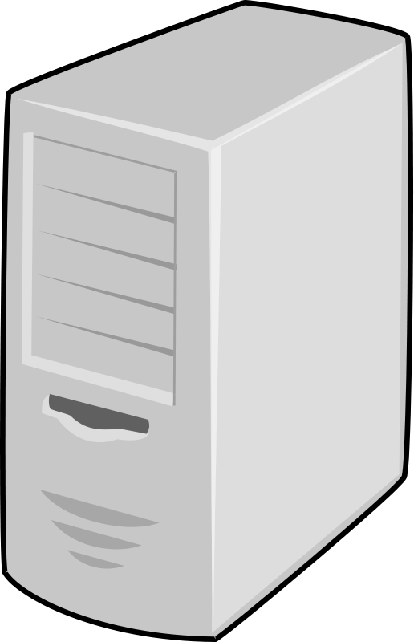
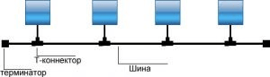
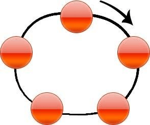
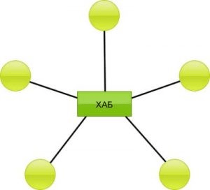

Компьютерные сети
Компьютерная сеть — это совокупность компьютеров, объединенных каналами связи и обеспеченных коммуникационным оборудованием и программным обеспечением для совместного использования данных и оборудования.
Компьютерные сети могут быть классифицированы по разным критериям, таким как территориальная распространенность, архитектура, топология, среда передачи и т.д. Например, по территориальной распространенности можно выделить локальные (LAN), городские (MAN) и глобальные (WAN) сети.
Для работы компьютерной сети необходимо использовать систему правил или протоколов, которые определяют, как передавать и получать данные по каналам связи. Существует множество различных протоколов, которые организованы в стеки или модели. Одна из наиболее известных моделей — это модель OSI (Open Systems Interconnection), которая состоит из семи уровней: физического, канального, сетевого, транспортного, сеансового, представительского и прикладного.
История компьютерных сетей началась в конце 1950-х годов, когда были созданы первые военные и научные сети. В 1969 году была запущена ARPANET — первая пакетная сеть, которая стала основой для развития Интернета. С тех пор компьютерные сети стали неотъемлемой частью жизни и бизнеса, предоставляя возможности для обмена информацией, совместной работы, обучения, развлечения и многого другого.

Визуализация Интернета — самой большой компьютерной сети в мире
История появления и развития компьютерных сетей
Развитие компьютерных сетей происходило, в первую очередь, за счет развития двух более крупных направлений технологии – вычислительной техники и коммуникаций. Первые попытки создать возможность работы с вычислительной техникой нескольких пользователей заключались в загрузке в мэйнфрэйм (основной компьютер) нескольких готовых пакетов данных, которые были заранее подготовлены и нуждались в обработке.
Первоначальное развитие этой технологии происходило на протяжении 50-х годов XX века, когда компьютеры представляли собой громоздкие и неудобные устройства, обрабатывающие информацию крайне длительное время. На тот момент удобство пользователя находилось на одном из последних мест в развитии, а основное внимание уделялось повышению мощности.
Следующим прообразом компьютерных сетей стало создание отдельных терминалов, имеющих полноценные собственные устройства ввода-вывода и работающие напрямую с одним общим компьютером. Для самого пользователя работа за таким устройством была куда более удобной – он мог не замечать, что мощности компьютера параллельно используются еще несколькими людьми. Именно тогда стали появляться первые сети, чей принцип работы заключался лишь в физическом удалении терминалов на определенные расстояния.
Как только начали появляться более компактные компьютеры – это произошло в 70-х годах, позволить себе их установку могли все больше предприятий, поэтому необходимость использования какого-либо средства связи возрастала и тогда возникли первые, приближенные к современным, способы объединения компьютеров в сеть и потребность в монтаже компьютерных сетей.
APRANET и появление полноценных сетей
В 1969 году произошло знаковое событие – минобороны США приняло решение об объединении всех основных компьютерных узлов в общую сеть. Передача данных осуществлялась между ними по коммутируемому кабелю, а для ее осуществления были созданы специальные операционные системы и огромное количество сложных сопутствующих протоколов.
Впоследствии, коммутируемые кабели телефонных сетей станут одним из основных способов передачи данных вплоть до середины 80-х годов.
Принцип передачи данных по телефонному кабелю, при этом, уже в первые годы существования компьютерных сетей претерпел определенные изменения. Так, в отличие от непрерывного потока информации, который мог подвергаться искажениям и мешать другим пользователям работать с сетью, как это бывает со стандартным телефонным сигналом, компьютерные данные отправлялись сразу готовыми закрытыми пакетами, что позволяло одновременно использовать один и тот же кабель множеству пользователей.
Краткая история развития компьютерных сетей
1950-1960 годы – первые попытки объединения мейнфрейма с терминалами.
1969 – появление APRANET и использование телефонных сетей для передачи данных.
1970-1974 – возникновение мини-компьютеров и создание вручную настраиваемых локальных сетей.
1974 появление первой стандартизованной сетевой архитектуры IBM SNA, а также стандартизация X.25
1980-1985 возникновение персональных компьютеров, появление Интернета в близком к современности виде. Использование стека TCP/IP на всех узлах. Возникновение стандартных технологий локальных сетевых протоколов Ethernet, FDDI, Token Ring.
1986-1987 – старт коммерческого использования Интернета.
1991 появление протокола Web и первых интернет-сайтов.
1995-2000 развитие Web и массовая популяризация компьютеров.
2000-2010 – использование беспроводных сетей, снижение стоимости передачи единицы информации сразу в несколько тысяч раз.
Что появилось раньше – WAN или LAN?
Говоря о компьютерных сетях, сейчас есть две основных их разновидности. Под подключением WAN (Wide Area Network) подразумевают объединение удаленных физически друг от друга компьютеров, а также простой выход в Интернет, в то время как LAN – это закрытая сеть, объединяющая физически близкие компьютеры и способная быть полностью изолированной от каких-либо других соединений.
Однако, на ранних этапах развития компьютеров, нужды в LAN-сетях не было – их заменяли стандартные комплексы из мейнфреймов и терминалов, хотя удаленная передача данных была крайне важным и приоритетным направлением исследований.
Локальные сети (Local Area Network – LAN) обладают замкнутой инфраструктурой до выхода на поставщиков услуг интернета. Термин “локальная сеть” может описывать и маленькую офисную сеть, и сеть большого завода, занимающего несколько гектаров. Применительно к организациям, предприятиям, фирмам используется термин корпоративная сеть – локальная сеть отдельной организации (юридического лица) независимо от занимаемой ею территории.
Корпоративные сети являются сетями закрытого типа, доступ к ним разрешен только ограниченному кругу пользователей (например, сотрудникам компании). Глобальные сети ориентированы на обслуживание любых пользователей.
Глобальная сеть (Wide Area Network – WAN) охватывает большие географические регионы и состоит из множества локальных сетей. С глобальной сетью, которая состоит из нескольких тысяч сетей и компьютеров, знакомы все – это Интернет.
Важную роль в развитии сетей сыграло появление персональных компьютеров, унификация их комплектующих и программного обеспечения. Так начали появляться первые сетевые протоколы – это произошло в 80-х годах. К концу века однозначным лидером среди них стал протокол Ethernet, способный обеспечивать скорость передачи данных в первом поколении своего развития со скоростью 10 Мбит/с, а на данный момент поддерживающий скорость передачи, превышающую 1 Гбит/с.
В настоящее время используются классификации компьютерных сетей по следующим критериям.
По территории:
• локальные – охватывают небольшие территории и располагаются внутри отдельных офисов, банков, корпораций, домов;
• региональные – образуются путем объединения локальных сетей на отдельных территориях;
• глобальные (интернет).
По способу связи компьютеров:
• проводные (компьютеры соединяются посредством кабеля);
• беспроводные (компьютеры обмениваются информацией посредством радиоволн. например, по технологии WI-FI или Bluetooth).
По способу управления:
• с централизованным управлением – для управления процессом обмена данных в сети выделяется одна или несколько машин (серверов);
• децентрализованные сети – не содержат в своем составе выделенных серверов, функции управления сетью передаются по очереди от одного компьютера другому.
По составу вычислительных средств:
• однородные – объединяют однородные вычислительные средства (компьютеры);
• неоднородные – объединяют различные вычислительные средства (например: ПК, торговые терминалы, веб-камеры и сетевое хранилище данных).
По типам среды передачи сети разделяются на оптоволоконные, с передачей информации по радиоканалам, в инфракрасном диапазоне, через спутниковый канал и т.д.
Произведя анализ истории создания компьютерных сетей можно прийти к выводу, что рождение компьютерных сетей было вызвано практической потребностью― иметь возможность совместного использования данных. Персональный компьютер – прекрасный инструмент для создания документа, подготовки таблиц, графических данных и других видов информации, но при этом нет возможности быстро поделиться своей информацией с другими, если не использовать компьютерные сети.
Типы компьютерных сетей
Для объединения компьютеров в систему обращают внимание на следующие параметры:
• разновидность машин;
• расстояние между оборудованием;
• возложенные на комплекс функции.
Даже если соединить пару компьютеров, это уже будет считаться сетью. У последней есть 2 задачи, которые она может выполнять по отдельности или обе сразу. Это — передача информации между системами либо предоставление доступа к общим ресурсам (серверам, принтерам, БД). Элементы сети связывают друг с другом посредством физического (проводами или радиоволнами) и логического (конкретными сетевыми протоколами) соединения.
Каждый вид компьютерных сетей был создан для определенной области применения, поэтому в отношении их действуют различные стандарты и методы. Соответственно, отдельный тип имеет свои недостатки и преимущества. Рассмотрим эти разновидности подробнее.
PAN — персональная сеть

PAN — Personal Area Network. Это объединение персонального пользовательского оборудования. В один комплекс собирают смартфоны, КПК, наушники, камеры, игровые консоли, ноутбуки и т. д., используя связь по Wi-Fi, Bluetooth, USB. Умные дома функционируют на основе протоколов ZigBee, Insteon, Z-Wave. PAN и WPAN (беспроводной вариант) имеют радиус действия, ограниченный 30 метрами, и могут обеспечить связью до 8 абонентов. Поэтому такие соединения нельзя использовать в разных зданиях. Но посредством персональной сети возможно подключиться к более крупным объединениям.
LAN — локальная сеть
LAN — Local Area Network. К этой локальной сети можно подключить множество устройств. Радиус охвата составляет до 2 км, скорость обмена информацией — до 10000 Мбит/с.
LAN обычно используют в частных домах, административных зданиях, образовательных учреждениях и других местах, где требуется объединить в один комплекс технику для быстрой передачи информации и общего доступа к серверам, печатающим устройствам, программному обеспечению. Кабельное подключение реализуют через технологию Ethernet, беспроводное — Wi-Fi. В последнем случае система называется WLAN, Wireless Local Area Network, и действует на основе стандарта IEEE 802.11. Она позволяет абонентам сохранять подключение к локальной сети при передвижении по территории, охватываемой сигналом.
Устройства, составляющие LAN или WLAN, свободно могут подключаться к интернету. Если в ЛВС (локальной вычислительной сети) подключено 2 и более компьютера, то в системе необходимо иметь также узлы и элементы, обеспечивающие стабильную связь — мосты, концентраторы, коммутаторы. Охват LAN можно увеличить за счет использования повторителей сигнала (ретрансляторов). Но обычно ЛВС используют в одном здании. WLAN популярны для установки дома или в организациях, где Wi-Fi раздают сотрудникам и посетителям. Главная отличительная черта ЛВС — скорость и качество связи на коротких расстояниях. LAN возможно подключить к более обширным MAN или WAN.
CAN — кампусная сеть
CAN — Campus Area Network. Это объединение нескольких ЛВС. Обычно используют в комплексе зданий, находящихся на расстоянии друг от друга (корпусы больниц, институтов, общежития учебных заведений и т. д.). ЛВС всех корпусов связаны между собой либо оптоволоконным кабелем, либо антеннами WiMAX, E-Band.
MAN — региональная (столичная, городская) сеть
MAN — Metropolitan Area. Связывает в одну компьютерную систему ближайшие ЛВС. Для обеспечения высокой скорости передачи данных между устройствами (расстояние между которыми может составлять десятки км) используют высокоэффективные маршрутизаторы и соединение по оптическому волокну. Особые возможности предоставляет абонентам беспроводная сеть WMAN. С помощью технологии WiMAX работают телеканалы и радиостанции, точки Wi-Fi Hotspot, где к городской сети или интернету могут подключиться все желающие (посетители кафе, коворкинг-центров и т. д.). Также к WMAN присоединяются жители, которые не могут использовать DSL (подключение по стационарной телефонной линии).
WAN — глобальная сеть
WAN — Wide Area Network. Если столичные сети связывают узлы, действующие в районах или городах, то глобальные объединяют неограниченное количество устройств в целых странах и на материках. Использовать для этого кабели Ethernet невозможно в связи с огромными расстояниями, поэтому WAN применяет другие технологии: SDH, IP/ MPLS, ATM, PDH, SONET. Чтобы обеспечить стабильность функционирования глобальных сетей, используют более сложные способы и аппаратное обеспечение, чем при работе ЛВС.
WAN принадлежат конкретным компаниям. Провайдеры арендуют их и подключают к интернету конечных пользователей или ЛВС.
GAN — глобальная зональная сеть
GAN — Globe Area Network. Яркой иллюстрацией является Интернет. Но вместе с этим есть организации, которые владеют сетями, закрытыми для общего доступа. Они состоят из нескольких WAN, благодаря чему фирма-собственник может объединить свои компьютеры, разбросанные по всему миру. Для соединения применяют оптоволоконные инфраструктуры, а также кабели, идущие по дну океанов, или спутниковые сигналы.
VPN — виртуальная частная сеть
VPN — Virtual Private Network. Это виртуальный канал, соединяющий клиента с сервером. Действует на основе любой из физических сетей, о которых шла речь выше. VPN дает доступ практически к каждому устройству в любой точке мира. Система бесплатна, в отличие от частных WAN или MAN. VPN используют для того, чтобы объединить несколько ЛВС в интернете или разрешить удаленный доступ через обычное подключение. Для сохранности конфиденциальных данных эта сеть применяет технологии шифрования.
BAN — нательная сеть
BAN — нательная компьютерная сеть. Объединяет внешние и/ или имплантированные устройства: умные кардиологические стимуляторы и часы, пульсометры, мониторы АД и т. д. Главная задача BAN состоит в обеспечении устойчивой и бесперебойной связи измерительных приборов.
Принципы построения компьютерных сетей
Все современные организации строят свои компьютерные сети по одному из принципов, описанных ниже. Выбор определенного вида физической связи устройств друг с другом оказывает влияние на свойства системы.
Линия
Все абоненты размещаются на одной линии. При выходе из строя либо отключении одного компьютера перестает функционировать вся система. Данный принцип построения ЛВС почти не применяют, т. к. он несовершенен и уже морально устарел.
Шина
К одному кабелю (шине) с помощью Т-коннекторов подключены компьютеры. На концах шины установлены терминаторы — заглушки, которые препятствуют отражению сигнала и обеспечивают его чистоту. Сеть функционирует следующим образом. Все компьютеры одновременно принимают и анализируют сигнал, посланный одним из участников. Устройство, которому адресована информация, начинает его обрабатывать.
Преимущества такой схемы:
• Каждый компьютер, прежде чем передавать данные, проверяет, есть ли в шине сигнал (это исключает коллизии).
• Систему легко и просто смонтировать и настроить.
• Экономится кабель (в сравнении с другими видами компьютерных сетей).
• Выход из строя одного устройства не влияет на деятельность сети.
К недостаткам относятся низкая скорость работы системы при подключении большого количества компьютеров и потеря соединения одновременно всеми абонентами в результате повреждений шины.
Кольцо
Эта топология похожа на принцип линии, но здесь компьютеры соединяются друг с другом последовательно в кольцо. Сигнал идет только в одну сторону. Если необходимо посылать информацию в обратном направлении, создают двойное кольцо. Компьютер принимает данные от предыдущего абонента и проводит анализ. Если информация направлялась ему, он ее обрабатывает, если нет — отправляет следующему участнику.
Систему легко смонтировать из минимума оборудования. Сеть, сформированная по принципу кольца, обладает более высокой скоростью передачи информации (по сравнению с линейной топологией) и устойчивостью. Она способна объединить до 1000 устройств. Но, если в какой-либо части кольца пропадает сигнал, система полностью перестает работать.
Многосвязная

Эта топология позволяет обмениваться данными на высокой скорости. Плюс при выходе из строя одного из элементов сети вся система продолжает функционировать, и остальные участники не испытывают дискомфорта при работе. Такая конфигурация применяется редко, так как является недешевым удовольствием. Обычно ее используют стратегические объекты, которым важна высокоскоростная и надежная работа системы.
Звезда
В этой схеме действует центральный коммутатор либо свитч (хаб), к которому по отдельности на расстоянии не более 100 м подключен каждый компьютер. Топология «звезда» считается самой оптимальной для формирования сети благодаря следующим преимуществам:
• минимум кабеля и дополнительных инструментов соединения;
• надежная работа в условиях высокой нагрузки;
• бесперебойное функционирование системы при выходе из строя одного из компьютеров или канала связи.
Естественно, если перестанет работать хаб, все участники системы потеряют соединение.